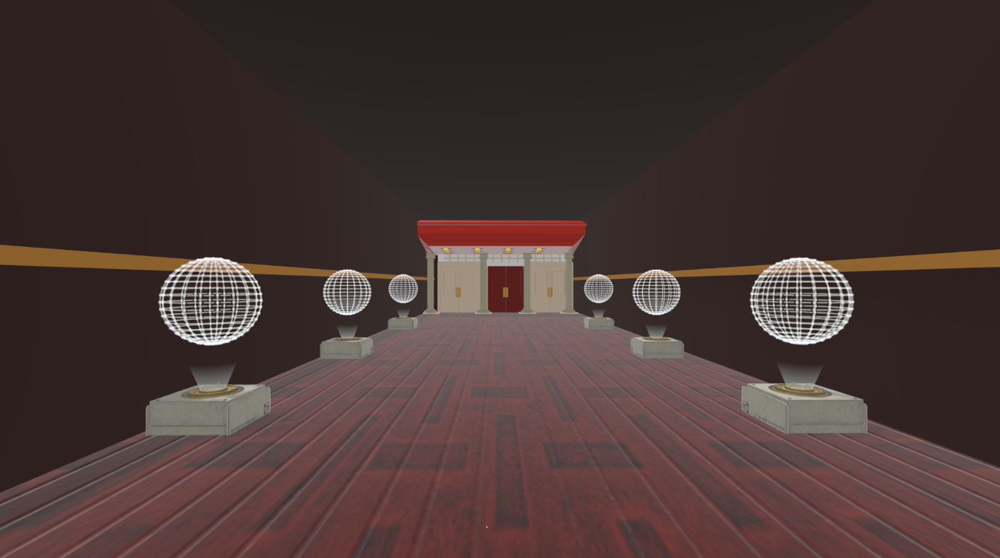
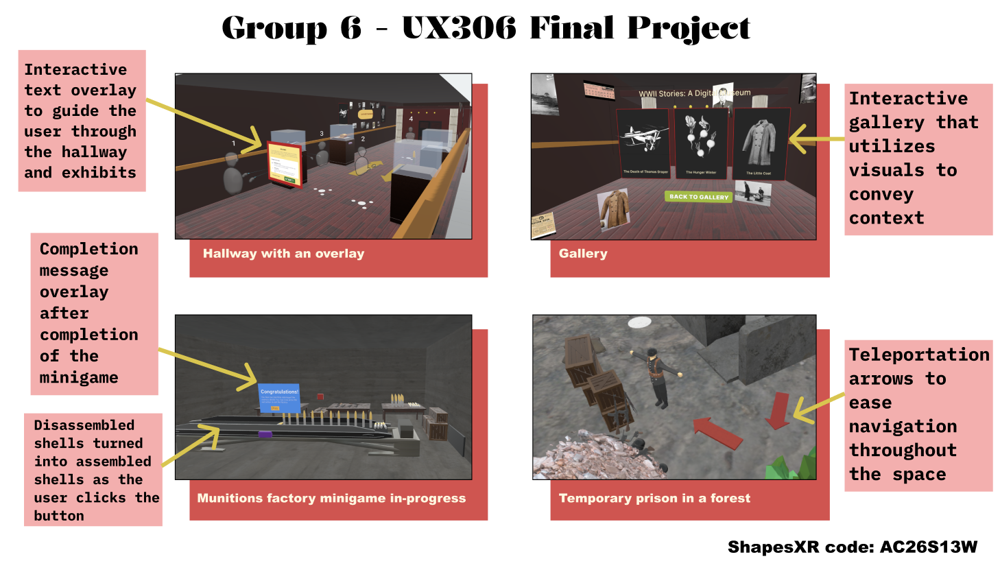
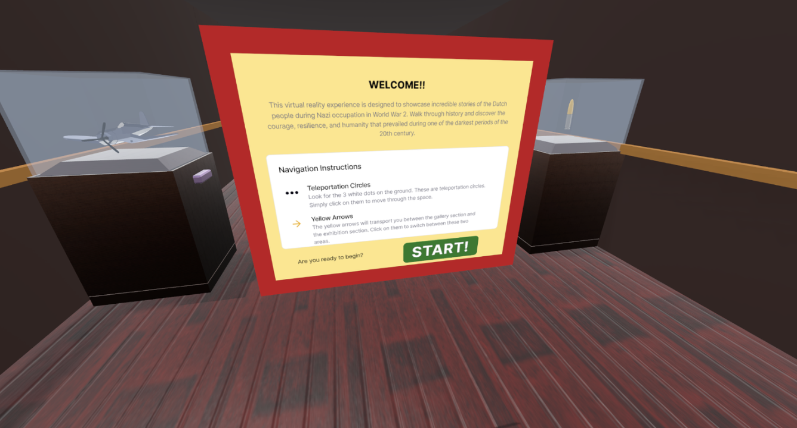
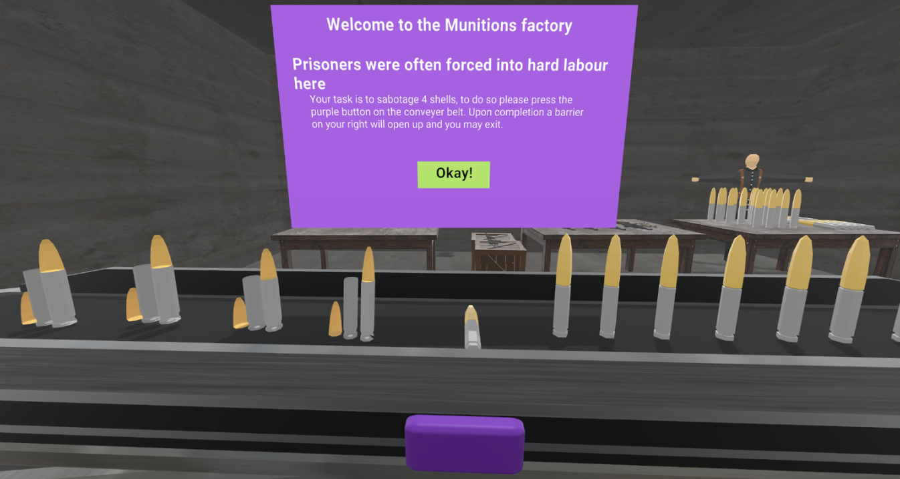
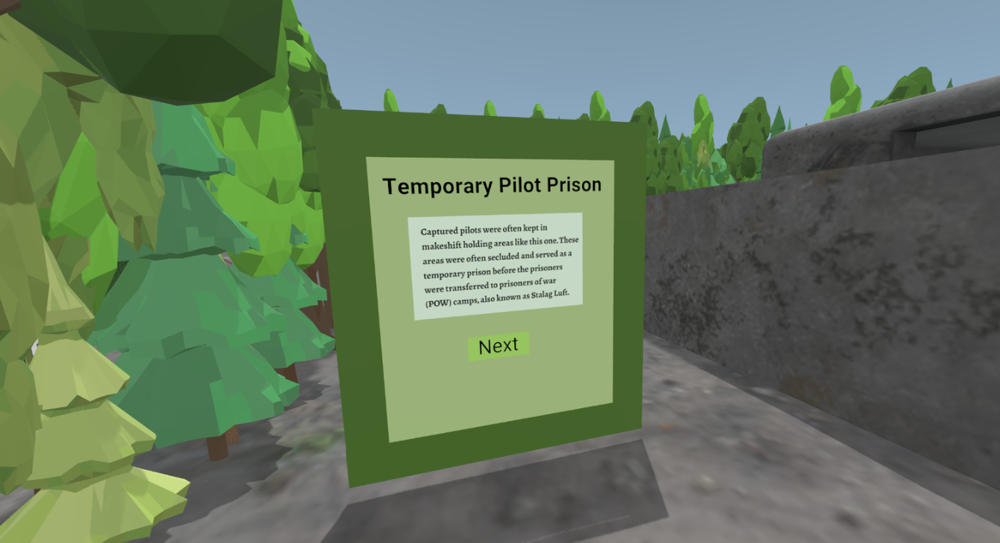
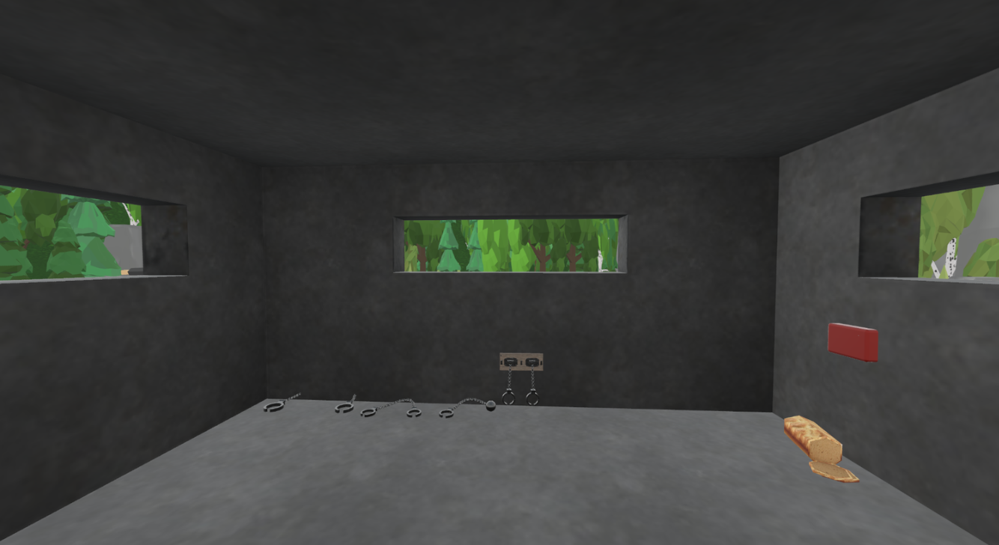
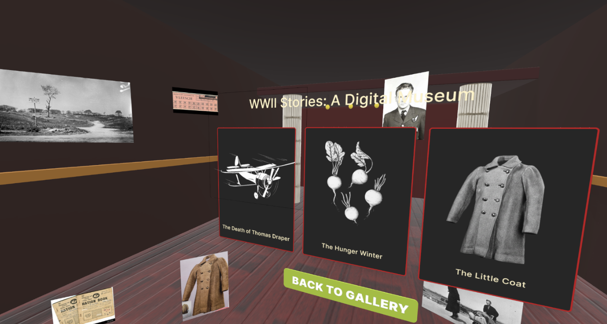
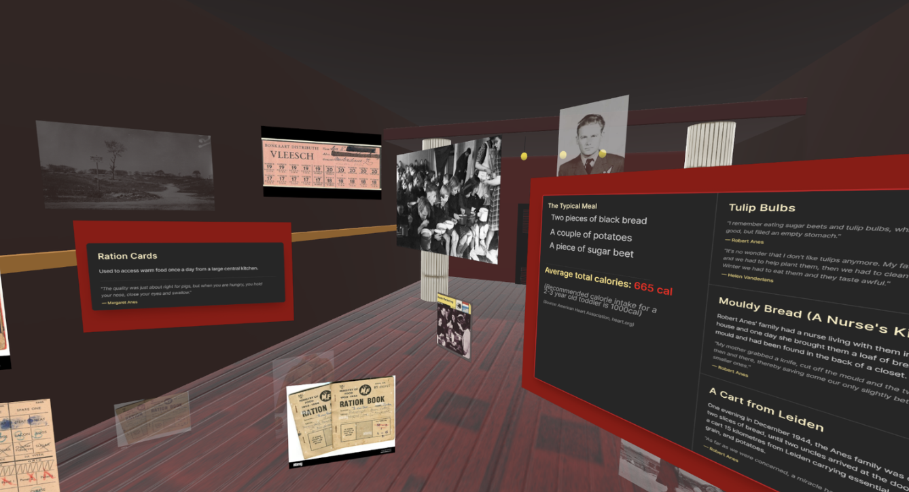

Brant Theatre Workshop VR
A virtual reality experience for the Brant Theatre Workshop.
Project Overview
This project aimed to create a virtual reality experience for the Brant Theatre Workshop using ShapesXR, connected to their most recent production "Herinnering" about Dutch immigrants in Brantford. The experience aims to be an immersive way for users to understand and connected with the story, as well as to provide a unique perspective on the historical events depicted. In this project, I led the direction of the prototype, managed client communication, and played a key role in the development process, creating and refining the VR experience.
About our Client
Our clients from Brant Theatre Workshop, Peter Muir and Vince Ball, has events every year where they decide to pick one community and share diverse, eye opening stories in engaging ways for awareness. This year they decided to share the stories of Dutch immigrants and had asked us to do so in a fun, educational, and interactive way that takes learning to a new level. To get started with the project, we first interviewed the client with our proposed idea to gather feedback and insights. Throughout the project, we kept in contact with the client to ensure their needs were being met.
Our Concept
- Create a museum to highlight the diverse stories of Dutch immigrants.
- Create an interactive environment where users can click on different objects.
- By clicking on the interactive elements, the users can learn and hear different stories.
Initial Prototype Idea
Our initial prototype idea was to create a virtual museum environment using ShapesXR where users could explore different exhibits and learn about the experiences of Dutch immigrants. The items in the exhibit would be items related to the different stories (white spheres are placeholders for actual interactive elements).

Initial User Testing
ObjectiveThe goal of our first round of user tests was to evaluate the usability, comfort, and overall experience of the VR prototype made. We wanted to see if there are inconsistencies in the VR space, how intuitive our design was, and if the space is engaging for users to learn. We also wanted to understand if users felt any discomfort while navigating the space.
Methodology
A monitored user test was done in which the user was asked to navigate through the space with minimal instructions to test how intuitive the design is. Prior to the test the user was asked to complete a short survey to assess their understanding of VR, their experience, any accessibility concerns, use of VR, demographics, and questions related to theatre performance. During the session, the user would describe their surroundings sometimes. After completing the experience there was a post survey which reflected on the user's experience, asking them ease of use, comfort, engagement, and notes for improvement.
Findings
- Users experienced confusion at the start due to lack of instructions and unclear controls
- Navigation and movement were inconsistent and users were struggling to move efficiently or comfortably
- Environment was limited in size reducing interactions and engagement
- Some buttons were not interactive which may have caused frustration
- Users experienced motion sickness
Final User Testing
Final Insights- Users found the experience to be more intuitive and guided, with text overlays and visual cues improving navigation
- The new movement system reduce motion sickness and felt more natural and comfortable
- Added context, made the experience feel more engaging and complete
- Users were able to navigate independently without assistance
- Minor confusion remained around some interactive elements (mini game button)
- Encouraged us to expand the experience with more stories and interactive assets
- Validated our direction, highlighting the strength of selective narratives like The Little Coat
- Suggested additional storylines such as the Hunger March, Dutch Resistance, and the Pilot Story
- Emphasized creative freedom over replicating the real museum space
- Highlighted a focus on engaging your younger audiences, shaping our testing and design decisions
Final Prototype
One-page design of the final VR prototype:

Screenshots from our prototype,including instructional overlays, the main gallery, and the story spaces:

Instructional overlay when you first enter the space

Munitions factory with minigame for users to interact with

Instructional overlay of temporary pilot prison scene

Inside of the bunker in the temporary pilot prison scene


Gallery space with interactive elements